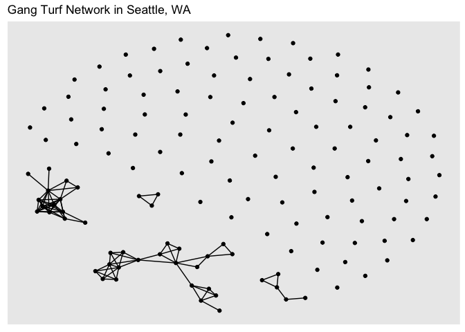
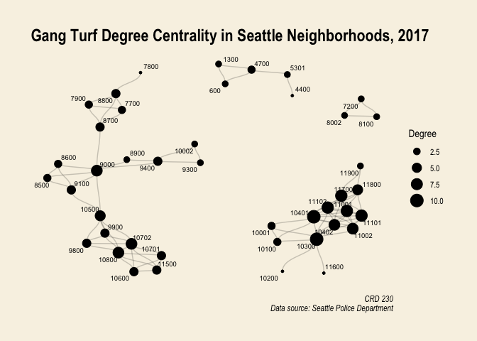
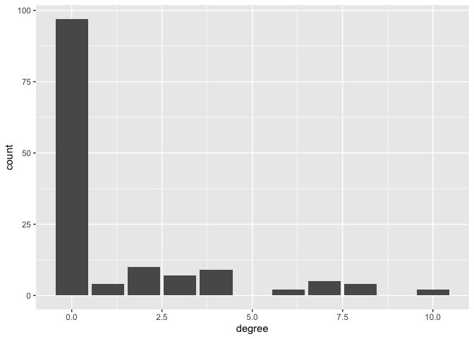
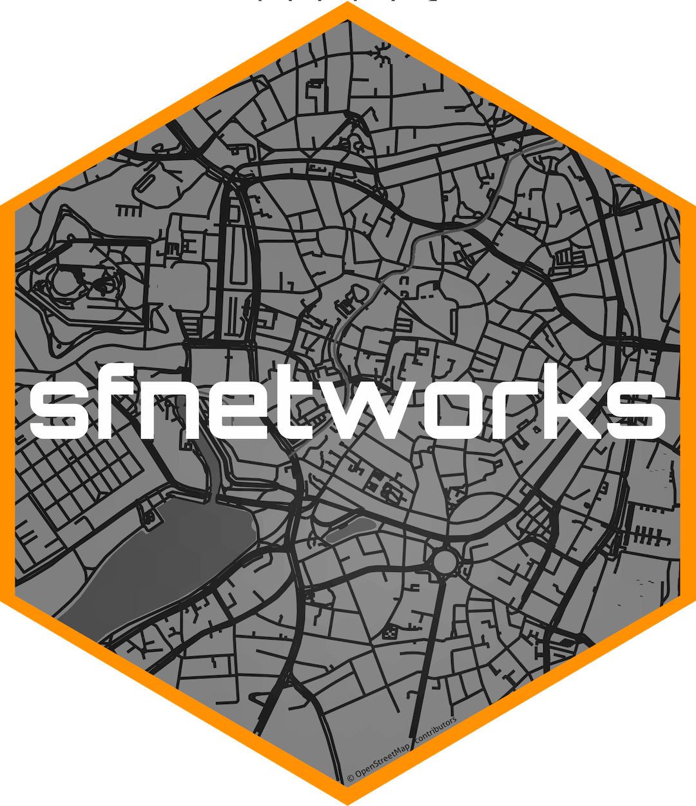
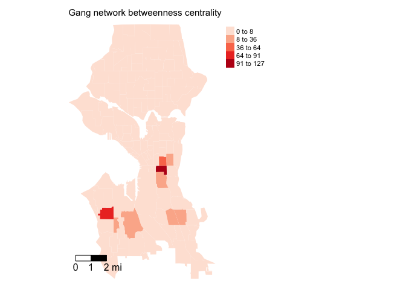
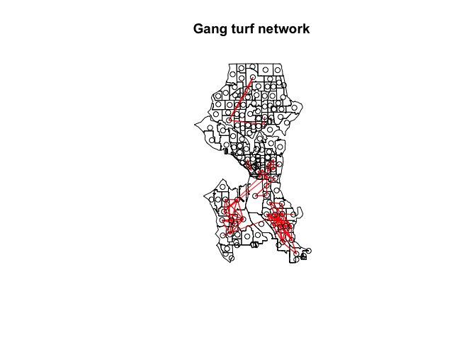

Lab 10: Social Network Analysis
CRD 230 - Spatial Methods in Community Research
Professor Noli Brazil
March 4, 2021
For most of this quarter, we’ve conceptualized connectivity and dependence from a purely spatial perspective. In this lab, we will examine how neighborhood linkages can be shaped by networks that transcend geographic connectivity. To do this, we will dive into the world of social network analysis (SNA). The objectives of this guide are as follows
- Learn how to construct a social network object in R
- Learn how to visualize a social network
- Learn how to calculate node and network-level summary statistics
- Learn how to incorporate network connectivity in a spatial regression model
- Learn how to create spatial network objects using the sfnetworks package
To help us accomplish these learning objectives, we will construct a social network linking census tracts in the City of Seattle based on gang turfs. The material covered in this lab follows closely the material covered in Handout 8.
Installing and loading packages
We’ll be using the following new packages in this lab. Install them using install.packages().
install.packages("tidygraph")
install.packages("ggraph")
install.packages("igraph")
install.packages("visNetwork")Load in all necessary packages for this lab.
library(tidyverse)
library(sf)
library(tmap)
library(spdep)
library(spatialreg)
library(knitr)
library(tidygraph)
library(ggraph)
library(igraph)
library(visNetwork)Bring in census tract data
We will be using the shapefile seattle_census_tracts_2010.shp. This file contains violent crime counts and rates between 2014 and 2017 by census tract in Seattle, WA. It also contains demographic and socioeconomic data from the 2012-16 American Community Survey. The record layout for the shapefile’s attribute table is located here.
I zipped up the files associated with the shapefile and uploaded the file onto Github. Download the file, unzip it, and bring it into R using the following code.
download.file(url = "https://raw.githubusercontent.com/crd230/data/master/seattle_census_tracts_2010.zip", destfile = "seattle_census_tracts_2010.zip")
unzip(zipfile = "seattle_census_tracts_2010.zip")
sea.tracts <- st_read("seattle_census_tracts_2010.shp", stringsAsFactors = FALSE)We’re going to examine the association between structural neighborhood characteristics and violent crime rates in the City of Seattle. Specifically, we will examine the association between violent crime and residential mobility, concentrated disadvantage, immigrant concentration, population density, percent of housing units that are owner occupied, and population density. Let’s create the concentrated disadvantage (mean standardized values of percent poverty, percent unemployed, percent non-Hispanic black, percent under 18 years old, and percent on public assistance) and immigrant concentration (mean standardized values of percent Hispanic and percent foreign born) indices using the following code. We covered these functions in Lab 6b.
sea.tracts.std <- sea.tracts %>%
st_drop_geometry() %>%
mutate_at(~(scale(.) %>% as.vector(.)),
.vars = vars(ppov, unemp, pnhblack, pund18, pwelfare)) %>%
mutate(concd = (ppov+unemp+pnhblack+pund18+pwelfare)/5,
immc = (pfb+phisp)/2) %>%
select(GEOID10, concd, immc)
#merge indices into main analysis file
sea.tracts <- left_join(sea.tracts, sea.tracts.std, by = "GEOID10")Bring in network data
There are numerous network analysis packages in R. We’ll be using the packages igraph, perhaps the most relied upon social network package in R (that or the suite of statnet packages) and tidygraph and ggraph, which leverage the power of igraph in a manner consistent with the tidyverse workflow we’re now accustomed to. Here is a vignette of tidygraph. Here is the igraph website and lecture slides providing a brief background on the package. Finally, find ggraph vignettes from its creator here, here, and here. In this lab, we will just scratch the surface on network analysis in R, so I would recommend exploring these resources if you want to use SNA in your research.
The two primary components of networks are nodes or actors, and the connections between them, which are known as edges or ties. There are two ways to construct a network graph.
Sociomatrix
First, you can use sociomatrices, also known as adjacency matrices. An adjacency matrix is a square matrix in which the column and row names are the nodes of the network. Within the matrix a 1 indicates that there is a connection between the nodes (edge), and a 0 indicates no connection. If the network is weighted, the values of the cells will measure the degree to which the node in the row interacts with the node in the column. Let’s bring in the sociomatrix for neighborhood gang affiliation in Seattle. I created this matrix outside of R and uploaded it onto GitHub.
gang.matrix <- read_csv("https://raw.githubusercontent.com/crd230/data/master/seattle_gang_tracts.csv")The matrix contains census tracts as rows and columns. The matrix does not distinguish between which specific gangs are in which neighborhoods - a value of 1 indicates that the neighborhoods on the row and column are in the same gang turf. Note that a neighborhood cannot be associated with multiple gangs (i.e. a neighborhood can only belong to one gang turf). The gang turf network is undirected. An adjacency matrix is always symmetric if you are dealing with an undirected network. Note that these data are outdated (2017), and thus should not be used in an analysis of contemporary data. Moreover, the data were compiled via newspapers articles and social media, and therefore may contain errors.
Node and edge lists
The second way to construct a network object is to use a node list and an edgelist. An edgelist is a data frame that contains a minimum of two columns, one column of nodes that are the source of a connection and another column of nodes that are the target of the connection. The nodes in the data are identified by unique IDs. If the distinction between source and target is meaningful, the network is directed. If the distinction is not meaningful, the network is undirected. In our case study, our network is undirected. Let’s bring in the edgelist, which I uploaded onto Github.
sea.edges <- read_csv("https://raw.githubusercontent.com/crd230/data/master/edges.csv")Take a look
glimpse(sea.edges)## Rows: 90
## Columns: 2
## $ from <dbl> 5, 5, 21, 21, 22, 22, 22, 23, 23, 23, 23, 23, 23, 23, 24, 24, 24,…
## $ to <dbl> 104, 136, 50, 51, 36, 40, 46, 24, 36, 46, 48, 59, 64, 65, 36, 46,…We also need to establish a node list, which is a data frame with a column that lists the node IDs for all nodes in the network regardless of whether they have a connection to other network nodes. Let’s bring in the node list.
sea.nodes <- read_csv("https://raw.githubusercontent.com/crd230/data/master/nodes.csv")Take a gander
glimpse(sea.nodes)## Rows: 140
## Columns: 2
## $ id <dbl> 1, 2, 3, 4, 5, 6, 7, 8, 9, 10, 11, 12, 13, 14, 15, 16, 17, 18, 1…
## $ label <dbl> 26700, 26600, 800, 700, 600, 500, 402, 401, 300, 200, 100, 26500…The node list contains the id that defines the connection in the to and from columns in the edgelist and the tract FIPS code associated with the id.
Create the network object
Sociomatrix
We can create a network object from the adjacency matrix using the function graph_from_adjacency_matrix(), which is a part of the igraph package. We’ll need to clean up this matrix a bit before we can input it into graph_from_adjacency_matrix(). First, we want just 0 and 1 values in the matrix cells, so get rid of the column X1, which provides the tract IDs.
gang.matrix <- gang.matrix %>%
select(-X1)Next, designate row names using the column names of the data frame, which are the tract IDs.
rownames(gang.matrix) <- colnames(gang.matrix)Now we can use graph_from_adjacency_matrix() to create an igraph network object. The function graph_from_adjacency_matrix() takes in a matrix object, so we’ll need to use as.matrix() to convert gang.matrix to a matrix, which is currently a tibble.
class(gang.matrix)## [1] "tbl_df" "tbl" "data.frame"We’ll also need to specify that the network is undirected using the argument mode = "undirected"
gang.network.ig <- graph_from_adjacency_matrix(as.matrix(gang.matrix),
mode = "undirected")We’ll want to convert the igraph network object into a tidy network object so it can cohere with all the tidy functions we’ve learned in this class. To do this, use the function as_tbl_graph()
gang.network1<-as_tbl_graph(gang.network.ig)Node and edge lists
We create a network from an edge list and a node list using the function tbl_graph(), which is a part of the igraph package. The node list sea.nodes is a regular tibble with two columns indicating a generic ID from 1 to 140 for each tract and the tract FIPS code. What is the purpose of the ID of 1 to 140? Because the function tbl_graph(), which creates a network object from node and edge lists, assumes that there should be nodes for every integer between min(node$id) and max(node$id), which is not the case if we use the FIPS tract code.
In tbl_graph(), we specify the nodes and edges using the nodes = and edges = arguments, respectively. We use the argument directed = FALSE to tell R that we want to create an undirected network.
gang.network2 <- tbl_graph(nodes = sea.nodes, edges = sea.edges, directed = FALSE)The output for gang.network2 is similar to that of a normal tibble.
gang.network2## # A tbl_graph: 140 nodes and 90 edges
## #
## # An undirected simple graph with 101 components
## #
## # Node Data: 140 x 2 (active)
## id label
## <dbl> <dbl>
## 1 1 26700
## 2 2 26600
## 3 3 800
## 4 4 700
## 5 5 600
## 6 6 500
## # … with 134 more rows
## #
## # Edge Data: 90 x 2
## from to
## <int> <int>
## 1 5 104
## 2 5 136
## 3 21 50
## # … with 87 more rowsThe object gang.network2 is separated into node and edge tables. Edge Data is a table of all relationships between from and to. Node Data is a table containing all of the IDs and FIPS codes of the tracts even if they do not appear in the Edge Data table (not all 140 tracts are part of a gang turf).
We find that there are 140 nodes (census tracts) and 90 edges. The first six rows of “Node Data” and the first three of “Edge Data” are also shown.
Run the command class() on gang.network2 and you’ll find that tidygraph sub classes igraph with the tbl_graph class and thus presents the network in a tidy manner.
class(gang.network2)## [1] "tbl_graph" "igraph"Visualizing your network
There are a number of ways to visualize your network. The most common approach is to graph the network’s nodes and edges onto a two-dimensional space. The tidy package for graphing networks is ggraph, which is an extension of ggplot2, making it easier to carry over the basic ggplot() skills we learned in Lab 2 to the creation of network plots in this lab.
Let’s plot the Seattle neighborhood gang turf network using ggraph()
gang.network2 %>%
ggraph(layout = "fr") +
geom_edge_link() +
geom_node_point() +
ggtitle("Gang Turf Network in Seattle, WA")
As you can see, the structure of the command ggraph() is similar to that of ggplot() with the separate layers added with the + sign. The first step is to establish a layout using the argument layout = in ggraph(). The layout parameter specifies the algorithm to use to display the graph. In other words, a layout is the vertical and horizontal placement of nodes when plotting the graph structure. The “fr” layout is part of the graph layouts package and is always a safe choice since it is deterministic and produces nice layouts for almost any graph. Other layout algorithms are described here. You can get a deeper look into the other ways you can display the network in this guide. Note that there isn’t anything geographic about the above plot - the location of the points in the plot are not linked or associated with anything referenced on the earth’s surface.
The functions geom_edge_link() and geom_node_point() plots the edges and nodes, respectively. And there are arguments within these commands to stylize and alter their graphical features. Network visualizations are cool if you’ve got a small enough data set. Check out the ggraph vignettes to find out how you can improve your graphics.
Just like with interactive maps, you can also make interactive network graphs. You can do this by using the package visNetwork. Use the function toVisNetworkData() to initialize the interactive graph. The argument idToLabel = FALSE tells R not to use the column id to identify the nodes. It will instead grab the column label
dataVis <- toVisNetworkData(gang.network2,idToLabel = FALSE)You then create the interactive network using the function visNetwork(). Similar to ggraph() you can make this interactive visual prettier.
visNetwork(nodes = dataVis$nodes, edges = dataVis$edges, width = "100%",
main = "Gang Turf Network in Seattle Neighborhoods") %>%
addFontAwesome() %>%
visOptions(highlightNearest = list(enabled = T, hover = T), nodesIdSelection = T) %>%
visInteraction(navigationButtons = TRUE)The widget will allow you to pick a neighborhood and highlight its ego network.
Node characteristics
Let’s now calculate the local network measures covered in Handout 8. In order to do this, we create node-level variables within the graph object gang.network2. Let’s look at the output for gang.network2 again.
gang.network2## # A tbl_graph: 140 nodes and 90 edges
## #
## # An undirected simple graph with 101 components
## #
## # Node Data: 140 x 2 (active)
## id label
## <dbl> <dbl>
## 1 1 26700
## 2 2 26600
## 3 3 800
## 4 4 700
## 5 5 600
## 6 6 500
## # … with 134 more rows
## #
## # Edge Data: 90 x 2
## from to
## <int> <int>
## 1 5 104
## 2 5 136
## 3 21 50
## # … with 87 more rowsNotice the text Node Data: 140 x 2 (active). This indicates that the Node table is active and any manipulations of the graph object will be done on this table. What if you wanted to manipulate the Edges table? You will need to use the activate() function, which is a part of the tidygraph package.
gang.network2 %>%
activate(edges)## # A tbl_graph: 140 nodes and 90 edges
## #
## # An undirected simple graph with 101 components
## #
## # Edge Data: 90 x 2 (active)
## from to
## <int> <int>
## 1 5 104
## 2 5 136
## 3 21 50
## 4 21 51
## 5 22 36
## 6 22 40
## # … with 84 more rows
## #
## # Node Data: 140 x 2
## id label
## <dbl> <dbl>
## 1 1 26700
## 2 2 26600
## 3 3 800
## # … with 137 more rowsYou’ll see now that the Edge Data is active. The function activate() allows R to know which of the two tables (nodes or edges) to perform further transformations on (the node table is always the default). And because we are in the tidyverse, manipulations of the tables take on all the tidy functions we’ve learned throughout this class. For example, let’s filter out the nodes that don’t have an edge. We use the function filter(), which we’ve used extensively throughout this class.
gang.network.connected <- gang.network2 %>%
# Remove isolated nodes
activate(nodes) %>%
filter(!node_is_isolated())The command node_is_isolated() is a tidygraph function that identifies the nodes that do not have a link and the ! sign indicates not, which means when plugged into filter(), remove the nodes that have a TRUE for node_is_isolated(). We get a network that contains only the 43 tracts that are a part of a gang turf.
gang.network.connected## # A tbl_graph: 43 nodes and 90 edges
## #
## # An undirected simple graph with 4 components
## #
## # Node Data: 43 x 2 (active)
## id label
## <dbl> <dbl>
## 1 5 600
## 2 21 10002
## 3 22 10001
## 4 23 11002
## 5 24 10402
## 6 25 10702
## # … with 37 more rows
## #
## # Edge Data: 90 x 2
## from to
## <int> <int>
## 1 1 41
## 2 1 43
## 3 2 19
## # … with 87 more rowsNow that we know how to activate nodes for manipulation, let’s run through the measures that characterize their connectedness.
Centrality
One of the most popular node characteristics is centrality. The higher the centrality, the more central the node. The definition of centrality is pretty broad. As such, there are several measures of centrality. Let’s calculate the three centrality measures covered in Handout 8. The tidygraph functions that calculate centrality take on the form centrality_. First, there is degree centrality, which captures the number of relationships (edges) that a node has. Use the function centrality_degree() within mutate() to create a variable named degree that provides node-level degree centrality. Remember, this is a node measure, so make sure the nodes table is activated within your network object.
gang.network2 <- gang.network2 %>%
activate(nodes) %>%
mutate(degree = centrality_degree())The column degree is a part of the node table in gang.network2.
gang.network2## # A tbl_graph: 140 nodes and 90 edges
## #
## # An undirected simple graph with 101 components
## #
## # Node Data: 140 x 3 (active)
## id label degree
## <dbl> <dbl> <dbl>
## 1 1 26700 0
## 2 2 26600 0
## 3 3 800 0
## 4 4 700 0
## 5 5 600 2
## 6 6 500 0
## # … with 134 more rows
## #
## # Edge Data: 90 x 2
## from to
## <int> <int>
## 1 5 104
## 2 5 136
## 3 21 50
## # … with 87 more rowsWe can create a degree centrality plot like the one shown in Figure 10 in Handout 8 using our new friend ggraph(). We specify within geom_node_point() that we want to change the size and color of each node based on its degree.
ggraph(gang.network2, layout = 'kk') +
geom_edge_link() +
geom_node_point(aes(size = degree, colour = degree)) +
scale_color_continuous(guide = 'legend') +
theme_graph()
Making nice graphs of networks that are disconnected like gang.network2 can be difficult. If the artist in you is calling out, you can make a nice visual using only nodes that are connected. For example, here is a degree centrality plot for the gang.network.connected network with tract labels and a title.
#create degree variable
gang.network.connected <- gang.network.connected %>%
mutate(degree = centrality_degree())
ggraph(gang.network.connected, layout = "nicely") +
geom_edge_diagonal(alpha = 0.2) +
geom_node_point(aes(size = degree)) +
scale_color_brewer(palette = "Set1", name = "Type") +
geom_node_text(aes(label = label), size = 2.5, repel = TRUE) +
theme_graph() +
theme(plot.background = element_rect(fill = "#f8f2e4")) +
labs(title = "Gang Turf Degree Centrality in Seattle Neighborhoods, 2017",
size = "Degree",
caption = "CRD 230\n Data source: Seattle Police Department")
Another measure of centrality is betweenness, which captures the number of shortest paths that go through a node. Use the function centrality_betweenness() to create a node-level betweenness variable in gang.network2’s node table.
gang.network2 <- gang.network2 %>%
activate(nodes) %>%
mutate(betweenness = centrality_betweenness())We then plot node betweenness using ggraph() again.
gang.network2 %>%
ggraph(layout = 'kk') +
geom_edge_link() +
geom_node_point(aes(size = betweenness, colour = betweenness)) +
scale_color_continuous(guide = 'legend') +
theme_graph()
The third centrality measure covered in Handout 8 is closeness. Use centrality_closeness() within mutate() to create the variable closeness
gang.network2 <- gang.network2 %>%
activate(nodes) %>%
mutate(closeness = centrality_closeness())Then plot.
gang.network2 %>%
ggraph(layout = 'kk') +
geom_edge_link() +
geom_node_point(aes(size = closeness, colour = closeness)) +
scale_color_continuous(guide = 'legend') +
theme_graph()
Network characteristics
You’ve successfully created a network object and visualized it. You then measured its node-level characteristics. Next, let’s summarize the overall network. We’ll go through all the network-level measures covered in Handout 8.
Average degree
The first network measured covered in Handout 8 is the average degree. Average degree is just the mean degree across all nodes, or the average number of edges per node in the network. We already created the variable degree, which measures node-level degree centrality. We just take the mean of that variable. Heck, why not take the max, the median, and other summary statistics. To do this, we activate the nodes table, pipe it into the function as_tibble() to transform the table into a tibble, and use the function summarize() to calculate summary statistics.
gang.network2 %>%
activate(nodes) %>%
as_tibble() %>%
summarize(mean = mean(degree),
max = max(degree),
median = median(degree)) %>%
kable()| mean | max | median |
|---|---|---|
| 1.285714 | 10 | 0 |
The current active data can be extracted as a tibble using as_tibble(). Here, we find that average number of tracts within a single gang turf is 1.29. But, these data are likely skewed, with a large number of tracts not belonging to a gang turf. We can visualize this using a bar graph.
gang.network2 %>%
activate(nodes) %>%
as_tibble() %>%
ggplot() +
geom_bar(aes(x =degree))
Centralization
We covered node-level measures of centrality above. There are also network-level measures of centrality. Network centralization is a measure of the unevenness of the centrality scores of actors in a network. It measures the extent to which the actors in a social network differ from one another in their individual centralities. Centralization ranges from zero, when every actor is just as central for whatever centrality score we are interested in, to 1, when one node is maximally central and all others are minimally central.
To measure network-level centrality, we use the suite of centr_ functions in igraph. To get network degree centrality, use the function centr_degree(). The actual centrality value is stored in the scalar vector centralization, which we extract using the $ symbol.
centr_degree(gang.network2)$centralization## [1] 0.0626927Use centr_betw() to get network betweenness centrality.
centr_betw(gang.network2)$centralization## [1] 0.01299105Finally, centr_clo() to measure closeness centrality.
centr_clo(gang.network2)$centralization## [1] 0.001867652Remember from the handout that there are many flavors of centrality (node and network level). Degree, betweenness and closeness are the most popular flavors.
Clustering
We might be interested in measuring the level of clustering in the network. Broadly, clustering captures the degree to which nodes in a graph tend to cluster together. One of the most common measures of clustering is transitivity, which refers to the extent to which the relations that ties nodes in a network are transitive. Perfect transitivity implies that, if neighborhood 1 is connected (through an edge) to neighborhood 2, and neighborhood 2 is connected to neighborhood 3, then neighborhood 1 is connected to neighborhood 3 as well. We use the function transitivity() to measure transitivity, which is a part of the igraph package.
transitivity(gang.network2)## [1] 0.6966825If neighborhood 1 is affiliated with neighborhood 2 and neighborhood 2 is affiliated with neighborhood 3 through a gang turf, then the probability that neighborhood 1 is affiliated with neighborhood 3 through a gang turf is 69.7 percent.
Diameter
Another important network summary statistic is the diameter, which gives the length (in number of edges) of the longest geodesic path between any two nodes that are connected.
diameter(gang.network2)## [1] 6The value 6 means that longest geodesic path to go from one neighborhood to another is 6. We can get this path by using the get_diameter() function
get_diameter(gang.network2)## + 7/140 vertices, from eb5e498:
## [1] 34 25 35 54 57 56 75What do the results tell us?
The mean distance of the shortest paths from one neighborhood to another can be calculated using the function mean_distance()
mean_distance(gang.network2)## [1] 2.468153Note that this value only considers the connected neighborhoods.
Density
The density of a graph is a measure of how many ties between actors exist compared to how many ties between actors are possible. To get the density of a network, use the function graph.density(), which is a part of the tidygraph package.
graph.density(gang.network2) ## [1] 0.009249743The value is calculated using Equation 3 on page 13 of Handout 8.
sfnetworks
The methods in the above section do not get us to a complete convergence of the spatial and social network ecosystems in R. A new package, sfnetworks, moves us towards that objective. The package provides functions that allow users to create a spatial network based on geolocated points as nodes and lines (e.g. streets, transport networks, river basins, power grids, ecological networks) as edges. We won’t go through this package in detail because it is still in development and its power really resides in having both spatially explicit nodes and edges. Here is a snippet from the package’s vignette that conveys this.
In a geospatial network, the nodes always have coordinates in geographic space, and thus, are always described by an sf object. The edges, however, can also be described by just the indices of its end-nodes. This still makes them geospatial, because they start and end at specific points in space, but the spatial information is not explicitly attached to them. Both representations can be useful. In road networks, for example, it makes sense to explicitly draw a line geometry between two nodes, while in geolocated social networks, it probably does not. An sfnetwork supports both types. It can either have edges with a geometry stored in a geometry list column, described by an sf object, or edges that only refer to node indices, described by a regular data frame. We refer to these types of edges as spatially explicit edges and spatially implicit edges respectively.
In our case study of gang turfs in Seattle, we have spatially explicit nodes (tracts), but not edges. Nevertheless, we can still create an sf network and create some nice spatial network plots and maps.
First, we’ll need to install the package. Because it is still in development, the package is not on CRAN. So we need to install it from the creator’s GitHub website
remotes::install_github("luukvdmeer/sfnetworks")You might have to update a bunch of new packages. When I did so, I ran into some problems with the sf package. I had to remove it and then reinstall it. When you are done installing, load the package in.
library(sfnetworks)Next, let’s create an sfnetwork object using the function sfnetwork(). The first input is the nodes, which have to be an sf POINT object. Our nodes are tracts, which are polygons, but we can use tract centroids, which we already created above with the object centroids. Let’s reproject the centroids into UTM.
#reproject to UTM NAD 83
centroids <-st_transform(centroids,
crs = "+proj=utm +zone=10 +datum=NAD83 +ellps=GRS80")You then specify the edges in sfnetwork(), which may or may not be spatial (i.e. an sf object). In our case, our edges are not explicitly spatial.
sea_gang_sfnetwork <- sfnetwork(centroids, sea.edges, directed = FALSE)If we take a look at the object, it looks very similar to a tidygraph object, but with geometry attached!
sea_gang_sfnetwork## # A sfnetwork with 140 nodes and 90 edges
## #
## # CRS: NAD83 / UTM zone 10N
## #
## # An undirected simple graph with 101 components with spatially implicit edges
## #
## # Node Data: 140 x 1 (active)
## # Geometry type: POINT
## # Dimension: XY
## # Bounding box: xmin: 544372.9 ymin: 5260910 xmax: 557480.4 ymax: 5286565
## x
## <POINT [m]>
## 1 (547236.4 5261101)
## 2 (547960.5 5262823)
## 3 (553551.4 5284454)
## 4 (552363.2 5284937)
## 5 (550060.9 5285164)
## 6 (547377.9 5285564)
## # … with 134 more rows
## #
## # Edge Data: 90 x 2
## from to
## <int> <int>
## 1 5 104
## 2 5 136
## 3 21 50
## # … with 87 more rowsThe sfnetworks package does not yet include advanced visualization options. However, a simple plot method is provided, which gives a quick view of how the network looks like.
#get back to 1x1 plot frame
par(mfrow = c(1, 1))
plot(sea_gang_sfnetwork)
We already produced a similar map above, but it required three lines of somewhat ambiguous code.
We can actually make a much more visually compelling map. We’ll need to spatialize the lines connecting the tracts. To do this, use the to_spatial_explicit function within the convert() function, which draws straight linestring geometries between the to and from nodes of spatially implicit edges.
sea_gang_sfnetwork <- sea_gang_sfnetwork %>%
convert(to_spatial_explicit) Take a look at sea_gang_sfnetwork
sea_gang_sfnetwork## # A sfnetwork with 140 nodes and 90 edges
## #
## # CRS: NAD83 / UTM zone 10N
## #
## # An undirected simple graph with 101 components with spatially explicit edges
## #
## # Node Data: 140 x 2 (active)
## # Geometry type: POINT
## # Dimension: XY
## # Bounding box: xmin: 544372.9 ymin: 5260910 xmax: 557480.4 ymax: 5286565
## x .tidygraph_node_index
## <POINT [m]> <int>
## 1 (547236.4 5261101) 1
## 2 (547960.5 5262823) 2
## 3 (553551.4 5284454) 3
## 4 (552363.2 5284937) 4
## 5 (550060.9 5285164) 5
## 6 (547377.9 5285564) 6
## # … with 134 more rows
## #
## # Edge Data: 90 x 4
## # Geometry type: LINESTRING
## # Dimension: XY
## # Bounding box: xmin: 545975.2 ymin: 5261665 xmax: 555847.6 ymax: 5285164
## from to .tidygraph_edge_index geometry
## <int> <int> <int> <LINESTRING [m]>
## 1 5 104 1 (550060.9 5285164, 546878 5279439)
## 2 5 136 2 (550060.9 5285164, 549352 5283420)
## 3 21 50 3 (551922.7 5269471, 551889.1 5270762)
## # … with 87 more rowsThe lines have coordinates!
Why map just the nodes and edges? We can also map one of the node-level characteristics we measured above. For example, degree centrality. To do this, we need to create a variable degree that calculates degree centrality within the sea_gang_sfnetwork object.
sea_gang_sfnetwork <- sea_gang_sfnetwork %>%
mutate(degree = centrality_degree())Now we can make a choropleth map of degree centrality with lines connecting tracts belonging to the same gang turfs. I could not figure out how to do this using tm_shape() (maybe you can, super coder person). Instead, I use ggplot(). We didn’t really cover the use of ggplot() for mapping, only alluding to it in Lab 4a. Our GWR reference textbook discusses the use of ggplot() for mapping in Chapter 8. We can use ggplot() to create our degree choropleth map using the following code.
ggplot(sea.tracts) +
geom_sf(aes(fill = degree)) +
scale_fill_gradient(low= "white", high = "red", name ="") +
geom_sf(data = activate(sea_gang_sfnetwork, "edges") %>% st_as_sf(), col = 'black') +
labs(title = "Degree centrality of Seattle Gang Network") +
theme( axis.text = element_blank(),
axis.ticks = element_blank(),
panel.background = element_blank())
Cool, right? With the tools we learned above, you can overlay the social network over all sorts of variable layers that might influence or be impacted by crime, crime diffusion and/or the creation of gang turfs.
As I mentioned above, sfnetworks is a work in progress, but carries a lot of promise. Check out the package updates here to see its development. Once it gets on CRAN, it should be a go to package for combining spatial analysis with social network modelling.
And guess what? Your last badge of the quarter!

And with that, you’re done! Where’d all the time go?

This work is licensed under a Creative Commons Attribution-NonCommercial 4.0 International License.
Website created and maintained by Noli Brazil
Social and spatial network models
We’ve visualized and summarized at the node and network levels the gang neighborhood network in Seattle. Although our network is inherently spatial (e.g. gang turfs encompass a physical space, our network is a connection between neighborhoods across a city), everything we’ve done so far has been aspatial. Let’s now go through some ways to incorporate “spatiality” into our network analyses (or, conversely, ways to incorporate SNA into our spatial analyses).
One simple thing we can do is map the node characteristics we calculated above to find out what our network looks like geographically and identify where the most influential or connected nodes are physically located. First, let’s take out the node tibble from gang.network2 using the function
as_tibble(). Remember, make sure the node tibble is active.You’ll find that the tibble contains the tract ID, FIPS tract code label, and measures of centrality.
Join the centrality measures from node.centrality to the spatial object sea.tracts. We’ll join using the FIPS tract code TRACTCE10, which we’ll need to turn into a numeric in sea.tracts.
We can then map degree centrality
What about betweenness centrality?

We can also calculate whether a node measure is spatially clustered using the Moran’s I. Let’s do this for degree centrality. Let’s define a row standardized spatial weights matrix using Queen contiguity using the functions we learned in Lab 7.
Then calculate Moran’s I
What does the Moran’s I value tell you about the spatial clustering of gang network degree centrality in Seattle tracts?
As discussed in Handout 8, many of the methods we learned in Labs 7 and 8 using a spatial weights matrix can be applied using a social network or sociomatrix. In other words, the adjacency matrix can be plugged into a spatial regression framework - rather than a spatial weights matrix, we’re dealing with a social network weights matrix. This means we can apply the methods we’ve used to measure and model spatial dependency to measure and model social dependency.
You’ll need to first convert gang.matrix into a row-standardized weights matrix using the function
mat2listw(), which is a part of the spdep package. We also need to convert the tibble gang.matrix into a matrix usingas.matrix().We can then plot the connections

How does this map compare to, say, a map showing connections based on a queen contiguity spatial weights matrix?
It would be neat to combine
visNetwork()with, say,leaflet()so that you can create an interactive network and map. I’m not smart enough to construct this, so I will leave this up to the super coders to handle.You’ve created a weights matrix based on gang turf affiliation. You can then plug this matrix into the spatial regression functions we covered in Lab 8 to find out whether gang network dependency has an effect on violent crime rates above and beyond neighborhood structural characteristics. For example, use
lagsarlm()to run a social network lag model. You’ll need to add the argumentzero.policy=TRUEbecause of the isolates in the city. We regress the log violent crime rate lvcmrt1417 on concentrated disadvantage concd, residential mobility mob, percent home ownership pocc, immigrant concentration immc, and population density pod.You use the same interpretations here as you did for the models we ran in Lab 8, except instead of a spatial diffusion effect, you’re modelling a social network diffusion effect. You can compare the findings from these models to a spatial dependency model using Queen contiguity. This is the approach that Papachristos and Bastomski (2018) used in their American Journal of Sociology paper examining co-offending networks in Chicago.
How do the lag parameters and coefficient estimates from the social network lag model fit.lag.net compare to the spatial lag model fit.lag.geo?